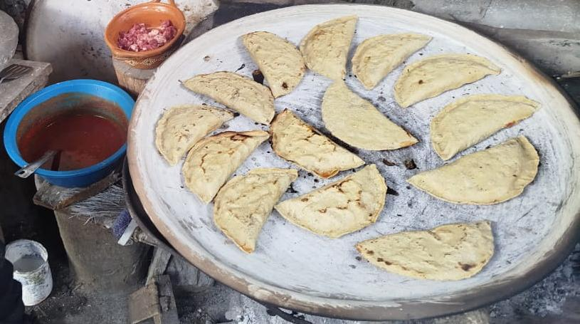
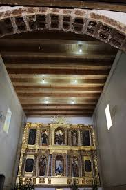
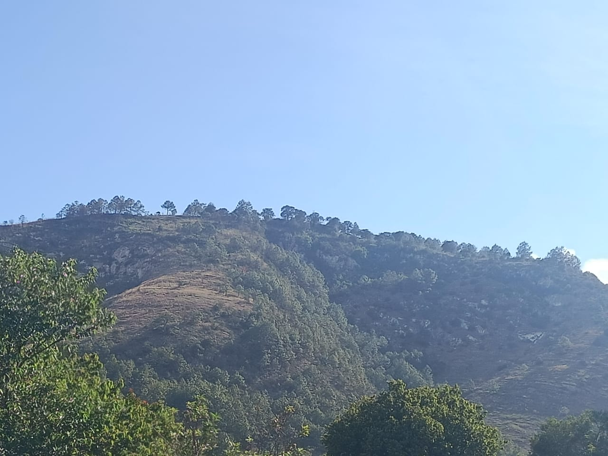

TU'UN XINAÑU'U
TU'UN JANA'A
TU'UN NDUNA JINI
NU IXO
NU NDAN'IXO

Ixta Iti
A sa'xo ixta iti ji'xi chi'o xa'a xichi, minu, ñii, ajo.
Ixta iti kuñu, chi'o ndexa'a kua'a de xndio xa'a ansi, xa'a nduxukaa, ajo nkasu, xisi axi minú jatu
Veñuu
Veñuu ku ndo'o, de xini ku vitu, ndanu ñu'u ixaandiuxri ku ma ndute xru'u


Lomo Xndiuku
Ñeti uni mil ñaxivi nka ndee nde lomo xndiuku, ñu'u lomo xndiuku nku uxi uni hectárea